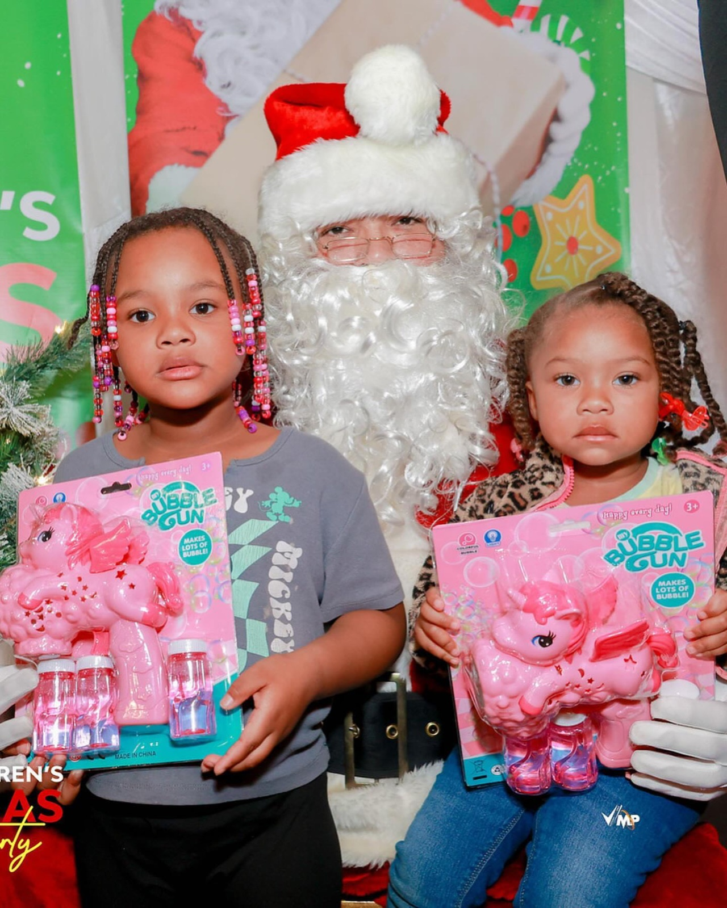
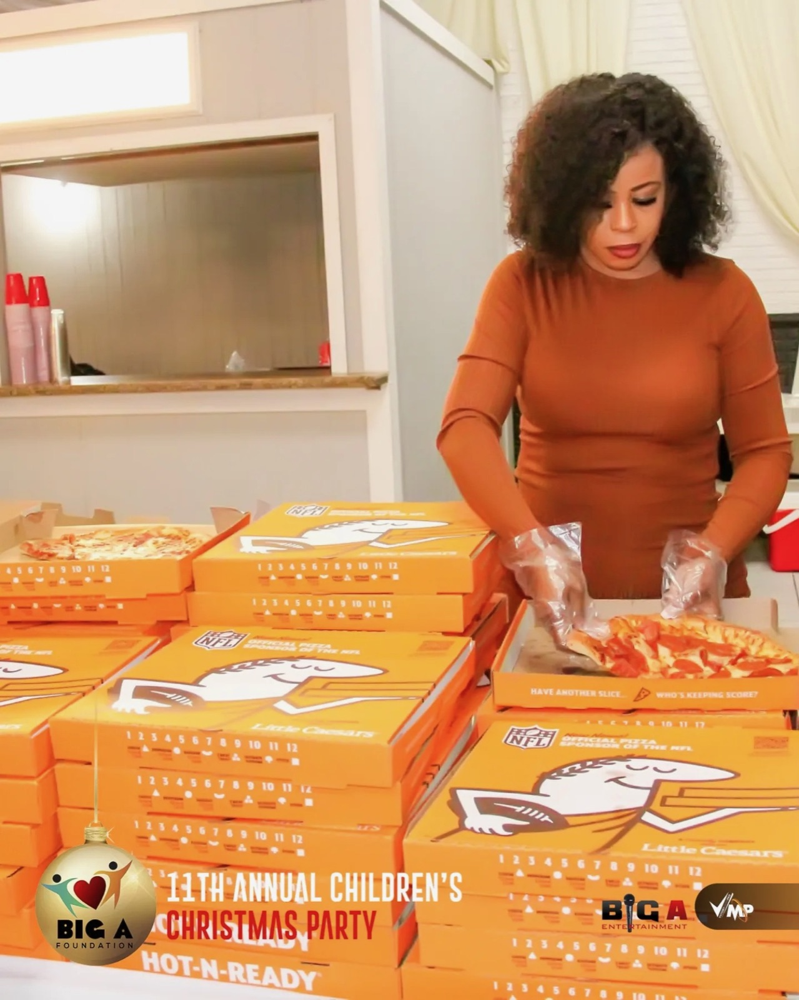
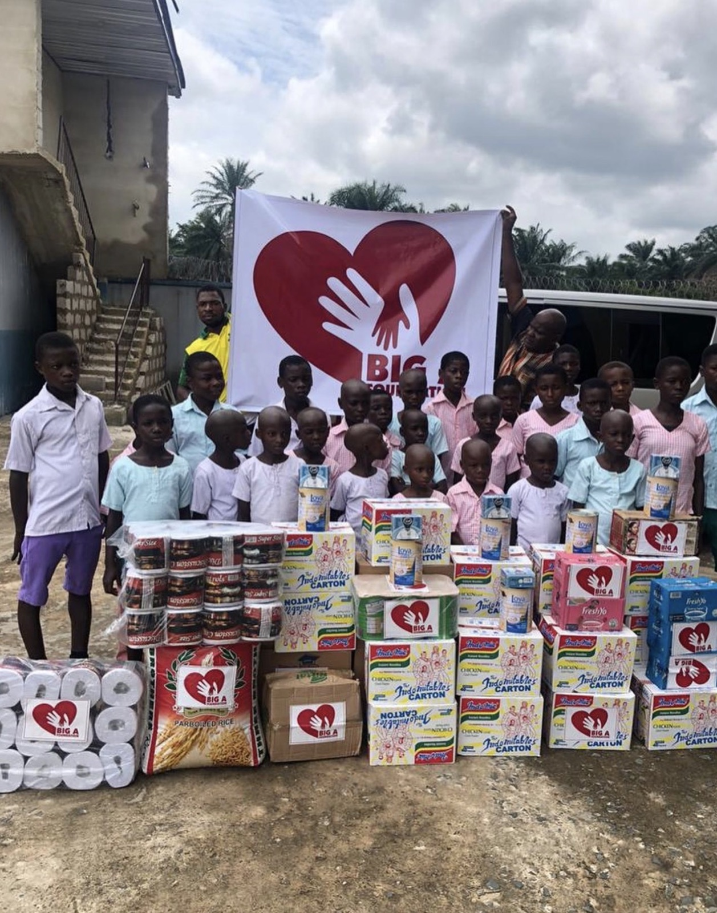
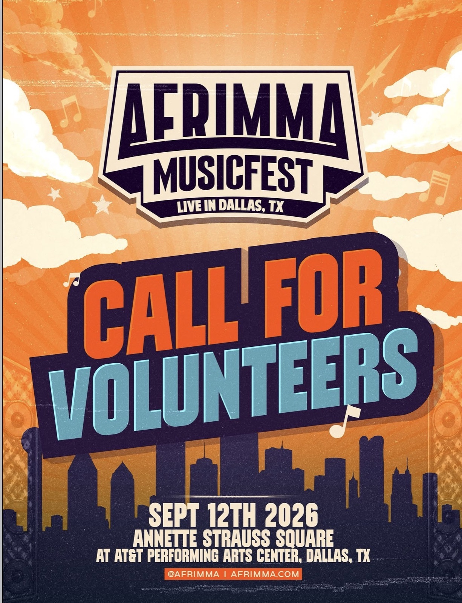
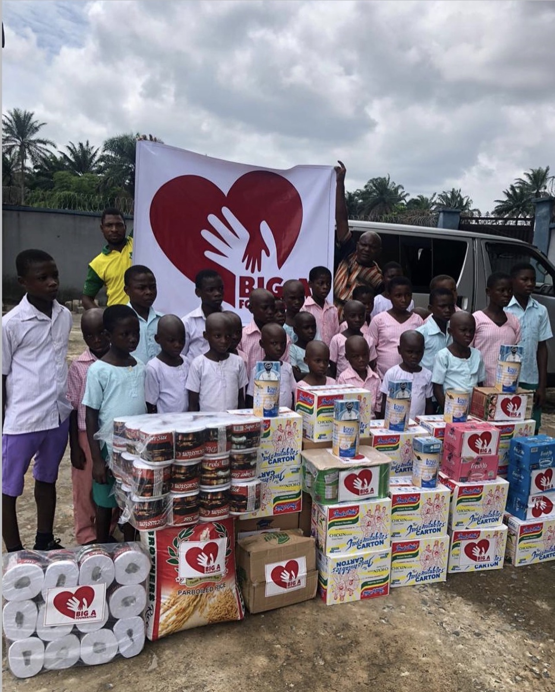

Four ways we show up.
Education, cultural awareness and community engagement, in Dallas-Fort Worth and across Nigeria and Africa.

Community Programs
Mentoring, workshops and youth programs that build confidence and connection across DFW.
- Youth mentoring and workshops
- The annual Children's Christmas Party
- Community days and seasonal events

Family Resources
Food, school supplies and essentials, delivered with dignity to families who need a lift.
- Food and resource drives
- School supply and gift distribution
- Emergency family assistance

Schools Across Africa
Ascension Secondary School, built and donated by founder Anderson Obiagwu in Owerri, Nigeria, in honor of his late parents.
- Ascension Secondary School, Owerri
- Classroom supplies and materials drives
- Planning for more of Nigeria, then Africa

Arts & Culture
Backing artists, performers and cultural spaces that celebrate African heritage, including new programming like Comedy Across Continents.
- AFRIMMA Musicfest
- Comedy Across Continents
- Platforming African artists and performers
Schools across Africa.
Founder Anderson Obiagwu built and donated Ascension Secondary School in Ogberuru, Nigeria, in honor of his late parents. More of Nigeria is next, then across Africa.
